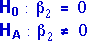
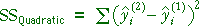
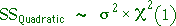

Hypotheses
We now assume that the data come from a quadratic model,

In this model, a test for linearity asks whether the quadratic term is necessary. Formally, we want to assess the hypotheses,

A statistic with information about linearity
We base a test on the quadratic sum of squares,

SSQuadratic is small if the fitted values from the two models are similar — i.e. if the best-fitting quadratic model is close to linear. It is large if the best-fitting quadratic model has more curvature, making the fitted values from the two models further apart. Large values of SSQuadratic therefore give evidence that H0 does not hold — i.e. that a linear model is not correct.
Distribution of the quadratic sum of squares
As with other sums of squares, SSQuadratic has a chi-squared distribution if the 'simpler' of the two models being compared holds — i.e. if the data really are from a linear model.

Note that SSQuadratic has one degree of freedom since there is one more parameter in the quadratic model than in the linear model.
Simulation
The diagram below takes samples from a quadratic model and builds up the distribution of the quadratic sum of squares.
The two sliders alter the model from which the sample data are generated. Initially leave the curvature at 'Zero' so that the null hypothesis is true.
Click Take sample several times and observe that the quadratic sum of squares has a distribution that matches the theoretical chi-squared distribution with 1 d.f.
Increase the sample size (using the pop-up menu) and alter the slider for the slope. Again take several samples and observe that the distribution of SSQuadratic remains the same.
Finally, change the curvature of the model and take more samples. Since the model is no longer linear, SSQuadratic now has a distribution with a higher mean.
SSQuadratic has a chi-squared distribution if the data come from a linear model. Its distribution has a higher mean if there is curvature in the underlying model.